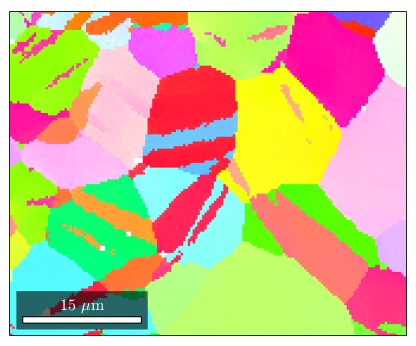
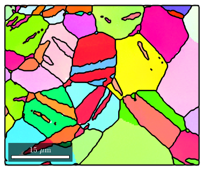
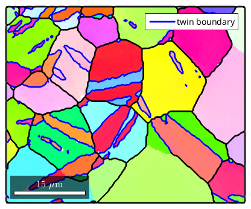
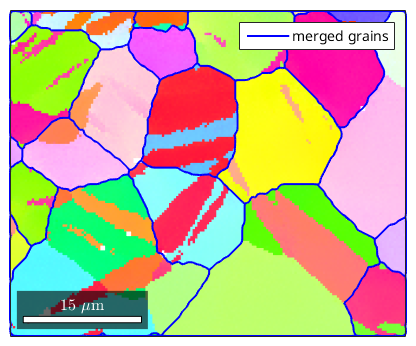
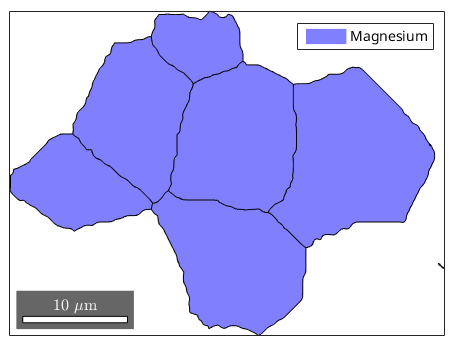

mtexdata twins
ebsd = ebsd('indexed')
ebsd = EBSD
Phase Orientations Mineral Color Symmetry Crystal reference frame
1 22833 (100%) Magnesium light blue 6/mmm X||a*, Y||b, Z||c
Properties: bands, bc, bs, error, mad, x, y
Scan unit : um
plot(ebsd,ebsd.orientations)
Hint: You might want to use the point group
"622" for colorcoding!
I'm going to colorize the orientation data with the
standard MTEX colorkey. To view the colorkey do:
oM = ipdfHSVOrientationMapping(ori_variable_name)
plot(oM)

[grains,ebsd.grainId] = calcGrains(ebsd('indexed'))
grains = smooth(grains,2)
grains = grain2d
Phase Grains Mineral Symmetry Crystal reference frame Phase
1 121 Magnesium 6/mmm X||a*, Y||b, Z||c
Properties: GOS, meanRotation
ebsd = EBSD
Phase Orientations Mineral Color Symmetry Crystal reference frame
1 22833 (100%) Magnesium light blue 6/mmm X||a*, Y||b, Z||c
Properties: bands, bc, bs, error, mad, x, y, grainId
Scan unit : um
grains = grain2d
Phase Grains Mineral Symmetry Crystal reference frame Phase
1 121 Magnesium 6/mmm X||a*, Y||b, Z||c
Properties: GOS, meanRotation
gB = grains.boundary
hold on
plot(gB,'linewidth',2)
hold off
gB = grainBoundary
Segments mineral 1 mineral 2
606 notIndexed Magnesium
3219 Magnesium Magnesium

compute the misorientation between two grains
mori = inv(grains(65).meanOrientation) * grains(74).meanOrientation;
select twinning boundaries
twinMori = orientation('axis',Miller(1,-2,1,0,ebsd.CS,'uvw'),...
'angle',86.3*degree,ebsd.CS,ebsd.CS)
gBMg2Mg = gB('Magnesium','Magnesium');
isTwinning = angle(gBMg2Mg.misorientation,twinMori) < 5*degree;
twinBoundary = gBMg2Mg(isTwinning)
hold on
plot(twinBoundary,'linecolor','b','linewidth',2,'displayName','twin boundary')
hold off
twinMori = misorientation
size: 1 x 1
crystal symmetry : Magnesium (6/mmm, X||a*, Y||b, Z||c)
crystal symmetry : Magnesium (6/mmm, X||a*, Y||b, Z||c)
Bunge Euler angles in degree
phi1 Phi phi2 Inv.
270 86.3 90 0
twinBoundary = grainBoundary
Segments mineral 1 mineral 2
1757 Magnesium Magnesium

merge twins along twin boundaries
[mergedGrains,parentId] = merge(grains,twinBoundary);
plot(ebsd,ebsd.orientations)
hold on
plot(mergedGrains.boundary,'linecolor','b','linewidth',1.5,'linestyle','-',...
'displayName','merged grains')
hold off
Hint: You might want to use the point group
"622" for colorcoding!
I'm going to colorize the orientation data with the
standard MTEX colorkey. To view the colorkey do:
oM = ipdfHSVOrientationMapping(ori_variable_name)
plot(oM)

remove boundary grains
boundaryIds = mergedGrains.boundary.hasPhaseId(0);
grainId = unique(mergedGrains.boundary(boundaryIds).grainId(:,2))
mergedGrains(grainId) = []
grainId =
1
2
3
5
7
10
11
12
13
14
15
16
18
23
24
25
26
27
28
mergedGrains = grain2d
Phase Grains Mineral Symmetry Crystal reference frame Phase
1 9 Magnesium 6/mmm X||a*, Y||b, Z||c
GOS meanRotation
0.00710511 121.72
0 120.776
0.00413797 127.137
0.00441718 122.376
0 47.1075
0 161.03
0 149.656
0.0855637 128.221
0 156.824
plot(mergedGrains)

grain relationships
mergedGrains(5).id
childs = grains(parentId == mergedGrains(5).id)
childs.meanOrientation
childs.grainSize
childs.area
ans =
17
childs = grain2d
Phase Grains Mineral Symmetry Crystal reference frame Phase
1 8 Magnesium 6/mmm X||a*, Y||b, Z||c
GOS meanRotation
0.00500566 19.0448
0 18.4261
0 19.1617
0.00709537 18.7687
0.0128808 144.967
0.00755447 18.6546
0.0126356 145.154
0.00963634 18.5054
ans = orientation
size: 8 x 1
crystal symmetry : Magnesium (6/mmm, X||a*, Y||b, Z||c)
specimen symmetry: 1
Bunge Euler angles in degree
phi1 Phi phi2 Inv.
153.044 18.7346 203.517 0
152.933 18.19 204.114 0
155.027 18.91 201.863 0
155.35 18.6108 202.209 0
30.1181 75.0615 194.492 0
154.098 18.4237 202.964 0
29.5396 75.0334 194.818 0
159.102 18.4221 199.136 0
ans =
9
1
1
92
560
422
345
30
ans =
0.7667
0.0351
0.0141
8.1873
50.7730
38.2040
31.0486
2.8240